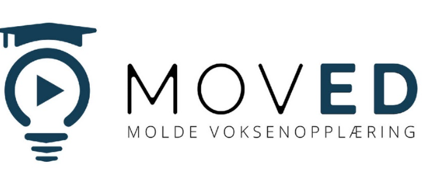

<!DOCTYPE html>
<html lang="no">
<head>
    <meta charset="UTF-8">
    <meta name="viewport" content="width=device-width, initial-scale=1.0">
    <title>MovED Arbeidslivsportal</title>
    <!-- Tailwind CSS -->
    <script src="https://cdn.tailwindcss.com"></script>
    <!-- Lucide Ikoner -->
    <script src="https://unpkg.com/lucide@latest"></script>
    <style>
        @import url('https://fonts.googleapis.com/css2?family=Inter:wght@400;600;700;900&display=swap');
        body { font-family: 'Inter', sans-serif; background-color: #f1f5f9; }
        .theme-card { transition: all 0.3s cubic-bezier(0.4, 0, 0.2, 1); }
        .theme-card:hover { transform: translateY(-8px); box-shadow: 0 20px 25px -5px rgb(0 0 0 / 0.1); }
        .feedback-correct { background-color: #064e3b; color: white; }
        .feedback-wrong { background-color: #7f1d1d; color: white; }
        .grammar-box { border-left: 6px solid #f59e0b; }
        .animate-pop { animation: pop 0.4s cubic-bezier(0.175, 0.885, 0.32, 1.275); }
        @keyframes pop { 0% { transform: scale(0.9); opacity: 0; } 100% { transform: scale(1); opacity: 1; } }
        
        .main-logo { max-width: 400px; width: 100%; height: auto; margin-bottom: 2rem; }
        .header-logo { max-width: 150px; height: auto; }
        .input-focus:focus { outline: none; border-color: #4f46e5; ring: 2px solid #4f46e5; }
    </style>
</head>
<body class="text-slate-900 leading-relaxed">

    <div id="app" class="min-h-screen flex flex-col"></div>

    <script>
        // --- HJELPEFUNKSJONER ---
        function shuffleArray(array) {
            return [...array].sort(() => Math.random() - 0.5);
        }

        // --- DATASTRUKTURER ---

        const coursesA2 = [
            {
                id: 'a2-t1', title: 'Synonymer og antonymer', icon: 'languages', color: 'bg-blue-100',
                grammarTheory: 'Synonymer er ord som betyr nesten det samme, mens antonymer er ord som betyr det motsatte. Å mestre dette gir deg et rikere språk på jobben.',
                text: 'I det norske arbeidslivet bruker vi mange ord med lik betydning. Synonymer er ord som betyr nesten det samme, som "en ansatt" og "en arbeidstaker". Alle disse ordene beskriver en person som jobber i en bedrift. På samme måte er "en sjef" og "en leder" synonymer. Antonymer er ord som betyr det motsatte av hverandre. I en jobbannonse ser du ofte ordparet "heltid" (100 % stilling) og "deltid" (mindre enn 100 %). Når du starter i en ny jobb, skriver du under en kontrakt, og når du blir gammel, går du av med pensjon.',
                tasks: [
                    { type: 'choice', q: 'Finn et synonym for ordet "leder":', options: ['Sjef', 'Ansatt', 'Vikar'], correct: 0 },
                    { type: 'choice', q: 'Hva er antonymet til "heltid"?', options: ['Fast jobb', 'Deltid', 'Overtid'], correct: 1 },
                    { type: 'choice', q: 'Hvilket ord betyr det samme som "ansatt"?', options: ['Arbeidsgiver', 'Arbeidstaker', 'Lærling'], correct: 1 },
                    { type: 'tf', q: 'Ordet "lønn" betyr det samme som "inntekt".', answer: true },
                    { type: 'blank', text: 'Når man slutter å jobbe fordi man er gammel, får man [blank].', answer: 'pensjon' }
                ]
            },
            {
                id: 'a2-t2', title: 'Viktige begreper', icon: 'book-open', color: 'bg-emerald-100',
                text: 'For å lykkes i arbeidslivet må du kjenne de formelle rammene. Arbeidsgiver er firmaet eller personen du har en avtale med. De har plikt til å gi deg oppgaver og betaler lønn. Før du starter i en jobb, skal du alltid få en skriftlig arbeidskontrakt. Denne kontrakten inneholder informasjon om arbeidstid, lønn og rettigheter. Hvis du jobber mer enn det som står i kontrakten, kalles det overtid, og dette skal normalt kompenseres med ekstra betaling. Ved kortvarig sykdom kan du bruke egenmelding i stedet for legeerklæring.',
                tasks: [
                    { type: 'drag-words', q: 'Koble ord til riktig forklaring:', pairs: [
                        { word: 'Overtid', def: 'Jobbe mer enn avtalt' },
                        { word: 'Egenmelding', def: 'Melding om sykdom' },
                        { word: 'Fagforening', def: 'Hjelper arbeidere' }
                    ]},
                    { type: 'tf', q: 'En arbeidskontrakt kan være muntlig i Norge.', answer: false },
                    { type: 'choice', q: 'Hvem har hovedansvaret for å betale lønn?', options: ['Kollegaen', 'Arbeidsgiveren', 'Lærlingen'], correct: 1 },
                    { type: 'blank', text: 'Alle ansatte i Norge skal ha en [blank] arbeidskontrakt.', answer: 'skriftlig' },
                    { type: 'choice', q: 'Hva kalles det når man jobber utover avtalt tid?', options: ['Lunsj', 'Overtid', 'Deltid'], correct: 1 }
                ]
            },
            {
                id: 'a2-t3', title: 'Ferieloven', icon: 'palmtree', color: 'bg-orange-100',
                text: 'Ferieloven sikrer at alle arbeidstakere får årlig fritid for å hvile. I Norge har du krav på minst 25 virkedager ferie hvert år. Siden lørdag regnes som en virkedag etter loven, tilsvarer dette fire uker og en dag. Mange bedrifter har i tillegg avtaler (tariffavtaler) som gir fem uker ferie. Du får ikke vanlig lønn når du har ferie. I stedet får du feriepenger. Disse pengene blir spart opp av arbeidsgiveren din året før du tar ferien. Feriepengene utgjør vanligvis mellom 10,2 % og 12 % av det du tjente i fjor.',
                tasks: [
                    { type: 'choice', q: 'Hvor mange virkedager ferie gir loven som minimum?', options: ['21', '25', '30'], correct: 1 },
                    { type: 'tf', q: 'Du får vanlig lønn mens du har ferie.', answer: false },
                    { type: 'blank', text: 'Pengene man får i stedet for lønn under ferie kalles [blank].', answer: 'feriepenger' },
                    { type: 'choice', q: 'Når tjener man opp feriepenger?', options: ['Samme år', 'Året før', 'Måneden før'], correct: 1 },
                    { type: 'choice', q: 'Hvor mange uker ferie har mange gjennom tariffavtale?', options: ['3', '4', '5'], correct: 2 }
                ]
            },
            {
                id: 'a2-t4', title: 'Vikar og permisjon', icon: 'user-plus', color: 'bg-purple-100',
                text: 'Noen ganger trenger bedrifter folk for en kortere periode. En vikar er en person som jobber i stedet for en annen som for eksempel er syk eller har permisjon. Permisjon betyr at du har fri fra jobben i en bestemt periode. Det finnes ulike typer permisjon. Foreldrepermisjon er vanlig når man får barn, og denne er ofte lønnet av NAV. Andre typer, som utdanningspermisjon, kan være uten lønn. Hvis du trenger fri for å gå i en begravelse eller flytte, kan du søke om velferdspermisjon. Alle søknader om permisjon bør sendes skriftlig til din leder.',
                tasks: [
                    { type: 'blank', text: 'En person som jobber midlertidig for en annen kalles en [blank].', answer: 'vikar' },
                    { type: 'choice', q: 'Hva kalles fri fra jobb i en bestemt periode?', options: ['Oppsigelse', 'Permisjon', 'Overtid'], correct: 1 },
                    { type: 'tf', q: 'NAV betaler ofte foreldrepenger under permisjon.', answer: true },
                    { type: 'choice', q: 'Hvordan bør du søke om permisjon?', options: ['Muntlig', 'Skriftlig', 'Ikke i det hele tatt'], correct: 1 },
                    { type: 'choice', q: 'Hva kalles fri pga. begravelse eller flytting?', options: ['Ferie', 'Velferdspermisjon', 'Sykemelding'], correct: 1 }
                ]
            },
            {
                id: 'a2-t5', title: 'Substantivbøyning', icon: 'type', color: 'bg-pink-100',
                grammarTheory: 'Substantiv bøyes i entall og flertall. En kontrakt (ubestemt) -> kontrakten (bestemt). Kontrakter (ubestemt flertall) -> kontraktene (bestemt flertall). Bruk bestemt form når du snakker om noe spesifikt.',
                text: 'På en arbeidsplass bruker vi mange substantiv for å beskrive hverdagen. Det er viktig å bruke riktig form av ordet for å unngå misforståelser. Når du snakker om en avtale du akkurat har lest, bruker du bestemt form: "Kontrakten er klar". Hvis du snakker generelt, bruker du ubestemt form: "Alle firmaer trenger en kontrakt". Vi bøyer også ord som en time, en dag, en uke og en måned. For eksempel har en vanlig arbeidsuke fem arbeidsdager. Å mestre bøyning av yrkesrelaterte ord gjør kommunikasjonen mer profesjonell.',
                tasks: [
                    { type: 'blank', text: 'Vi må signere [blank] (bestemt form av "en kontrakt") nå.', answer: 'kontrakten' },
                    { type: 'blank', text: 'Sjefen har snakket med de [blank] (bestemt flertall av "en ansatt").', answer: 'ansatte' },
                    { type: 'choice', q: 'Hva er ubestemt flertall av "en time"?', options: ['Timene', 'Timer', 'Timen'], correct: 1 },
                    { type: 'tf', q: 'Bestemt form av "en sjef" er "sjefen".', answer: true },
                    { type: 'sort-words', q: 'Bygg setningen:', sentence: ['Jeg', 'har', 'lest', 'alle', 'kontraktene.'], shuffled: ['alle', 'lest', 'Jeg', 'har', 'kontraktene.'] }
                ]
            },
            {
                id: 'a2-t6', title: 'V2-regelen', icon: 'zap', color: 'bg-yellow-100',
                grammarTheory: 'V2-regelen betyr at verbet (gjøre-ordet) alltid skal stå på plass nummer to i en vanlig fortellende setning. Hvis setningen starter med tid (I dag) eller sted (Her), må verbet komme rett etterpå.',
                text: 'Ordstilling er kanskje den viktigste delen av norsk grammatikk for å bli forstått. Den gylne regelen kaller vi V2-regelen. Den sier at i en vanlig setning skal verbet alltid være det andre leddet. Hvis du starter setningen med subjektet, kommer verbet etterpå: "Jeg jobber i dag". Men hvis du starter med tid, må du bytte plass på subjekt og verb: "I dag jobber jeg". Dette gjelder også for ord som "nå", "kanskje" og "derfor". Riktig ordstilling gir deg mer autoritet og flyt når du snakker med kolleger.',
                tasks: [
                    { type: 'sort-words', q: 'Sett ordene riktig:', sentence: ['I', 'dag', 'skriver', 'jeg', 'kontrakten.'], shuffled: ['skriver', 'jeg', 'I', 'dag', 'kontrakten.'] },
                    { type: 'choice', q: 'Hvilken setning er riktig?', options: ['Nå jeg starter.', 'Nå starter jeg.', 'Jeg nå starter.'], correct: 1 },
                    { type: 'tf', q: 'Verbet står alltid sist i norske setninger.', answer: false },
                    { type: 'blank', text: 'I morgen [blank] jeg på jobb (verb: skal).', answer: 'skal' },
                    { type: 'sort-words', q: 'Lag setningen:', sentence: ['Etterpå', 'spiser', 'vi', 'lunsj.'], shuffled: ['vi', 'lunsj.', 'spiser', 'Etterpå'] }
                ]
            },
            {
                id: 'a2-t7', title: 'Oppsigelse', icon: 'log-out', color: 'bg-red-100',
                text: 'En oppsigelse er en formell beskjed om at arbeidsforholdet skal avsluttes. Enten kan du si opp selv, eller så kan arbeidsgiveren si deg opp. En oppsigelse skal alltid være skriftlig for å være gyldig. Når en av partene sier opp, starter en periode som kalles oppsigelsestid. I denne perioden må du jobbe som vanlig, og du har krav på lønn. Vanlig oppsigelsestid i faste stillinger er mellom en og tre måneder, men i prøvetiden er den ofte bare 14 dager. Det er viktig å kjenne sin oppsigelsestid før man planlegger å starte i en ny jobb.',
                tasks: [
                    { type: 'tf', q: 'Du kan si opp jobben din via en SMS.', answer: false },
                    { type: 'blank', text: 'Tiden fra du sier opp til du slutter kalles [blank].', answer: 'oppsigelsestid' },
                    { type: 'choice', q: 'Hvor lang er vanligvis oppsigelsestiden?', options: ['1 uke', '1-3 måneder', '1 år'], correct: 1 },
                    { type: 'choice', q: 'Hva må en oppsigelse være for å være gyldig?', options: ['Muntlig', 'Skriftlig', 'Hemmelig'], correct: 1 },
                    { type: 'choice', q: 'Hva skjer i oppsigelsestiden?', options: ['Du får fri', 'Du jobber som vanlig', 'Du får ikke betalt'], correct: 1 }
                ]
            },
            {
                id: 'a2-t8', title: 'Lønnsslipp', icon: 'banknote', color: 'bg-indigo-100',
                text: 'Hver måned mottar du en lønnsslipp fra din arbeidsgiver. Dette dokumentet er viktig for å kontrollere at du får riktig betalt. Lønnsslippen viser to viktige beløp: Bruttolønn og nettolønn. Bruttolønn er pengene du har tjent før skatten blir trukket. Nettolønn er det beløpet som faktisk blir utbetalt til bankkontoen din. Dokumentet viser også hvor mye skatt arbeidsgiveren har trukket og sendt til skatteetaten på dine vegne. Du bør lagre alle lønnsslippene dine, da de fungerer som dokumentasjon på inntekt hvis du for eksempel skal søke om lån i banken.',
                tasks: [
                    { type: 'choice', q: 'Hva er bruttolønn?', options: ['Lønn etter skatt', 'Lønn før skatt', 'Feriepenger'], correct: 1 },
                    { type: 'choice', q: 'Hva kalles beløpet du får inn på konto?', options: ['Brutto', 'Netto', 'Skatt'], correct: 1 },
                    { type: 'tf', q: 'Lønnsslippen viser hvor mye skatt du betaler.', answer: true },
                    { type: 'blank', text: 'Lønn før skatt kalles [blank].', answer: 'brutto' },
                    { type: 'choice', q: 'Hvorfor er lønnsslippen viktig?', options: ['Pga. rabatt', 'Dokumentasjon på inntekt', 'Det er reklame'], correct: 1 }
                ]
            },
            {
                id: 'a2-t9', title: 'Arbeidsmiljø', icon: 'smile', color: 'bg-cyan-100',
                text: 'Et godt arbeidsmiljø handler om både den fysiske sikkerheten og hvordan vi trives sammen med andre. I Norge er det stort fokus på samarbeid, åpenhet og likeverd. Dette betyr at alle ansatte skal føle seg trygge og inkludert, uansett hvilken rolle de har. God kommunikasjon og respekt for kolleger er nøkkelen til suksess. Hvis det oppstår konflikter eller utfordringer, er det vanlig å snakke åpent om det med lederen eller en tillitsvalgt. Et sunt arbeidsmiljø fører til lavere sykefravær og gjør at alle gjør en bedre jobb. Du har selv et ansvar for å bidra til god stemning.',
                tasks: [
                    { type: 'choice', q: 'Hva er viktig for et godt miljø?', options: ['Konkurranse', 'Samarbeid og trivsel', 'Å jobbe alene'], correct: 1 },
                    { type: 'tf', q: 'Arbeidsmiljø handler bare om fysisk sikkerhet.', answer: false },
                    { type: 'choice', q: 'Hva gjør du hvis du opplever utfordringer?', options: ['Slutter', 'Snakker med leder/tillitsvalgt', 'Sier ingenting'], correct: 1 },
                    { type: 'blank', text: 'God [blank] er viktig for å unngå konflikter.', answer: 'kommunikasjon' },
                    { type: 'choice', q: 'Hvem har ansvar for miljøet?', options: ['Bare lederen', 'Bare ansatte', 'Både leder og ansatte'], correct: 2 }
                ]
            },
            {
                id: 'a2-t10', title: 'Refleksjon', icon: 'brain', color: 'bg-slate-200',
                text: 'Som arbeidstaker i Norge har du mange rettigheter, men du har også viktige plikter. En av de viktigste pliktene er å være lojal mot bedriften du jobber i. Dette betyr at du skal gjøre ditt beste, møte presis og følge de reglene som er satt. Ærlighet er også høyt verdsatt. Hvis du gjør en feil, er det best å si ifra med en gang slik at man kan finne en løsning sammen. Tenk over hvordan dine handlinger påvirker andre. Ved å være en hjelpsom og punktlig kollega, bygger du et godt rykte som vil hjelpe deg videre i karrieren din.',
                tasks: [
                    { type: 'choice', q: 'Hva er en plikt på jobben?', options: ['Å få mat', 'Å komme presis', 'Å ha ferie'], correct: 1 },
                    { type: 'tf', q: 'Lojalitet betyr å støtte bedriften sin.', answer: true },
                    { type: 'choice', q: 'Hva betyr ærlighet på jobb?', options: ['Å ta ting', 'Å snakke sant om feil', 'Å sove'], correct: 1 },
                    { type: 'blank', text: 'Som ansatt har du både rettigheter og [blank].', answer: 'plikter' },
                    { type: 'choice', q: 'Hva bygger du ved å være en god kollega?', options: ['Et rykte', 'Et hus', 'En bil'], correct: 0 }
                ]
            }
        ];

        const coursesB1 = [
            {
                id: 'b1-t1', title: 'Inkluderende arbeidsliv', icon: 'users', color: 'bg-blue-200',
                text: 'Inkluderende arbeidsliv (IA) er et samarbeid som skal gjøre det mulig for alle som kan jobbe, å delta i arbeidslivet. Hovedmålene med IA-avtalen er å forebygge sykefravær og hindre at folk faller utenfor arbeidslivet. Arbeidsgivere har en lovpålagt tilretteleggingsplikt. Dette betyr at hvis en ansatt får helseutfordringer, må sjefen prøve å tilpasse arbeidsoppgavene eller utstyret slik at vedkommende kan fortsette å jobbe. IA handler også om å inkludere mennesker med ulike bakgrunner, funksjonsevner og aldre. Et mangfoldig arbeidsmiljø blir ofte sett på som en styrke for bedriften.',
                tasks: [
                    { type: 'choice', q: 'Hva er et hovedmål med IA?', options: ['Gi mer lønn', 'Forebygge sykefravær', 'Kortere dager'], correct: 1 },
                    { type: 'choice', q: 'Hva betyr tilrettelegging?', options: ['Kjøpe kake', 'Tilpasse jobben til den ansatte', 'Gi alle sparken'], correct: 1 },
                    { type: 'tf', q: 'IA-avtalen skal hindre diskriminering.', answer: true },
                    { type: 'blank', text: 'IA står for [blank] arbeidsliv.', answer: 'inkluderende' },
                    { type: 'choice', q: 'Hva er fordelen med mangfold?', options: ['Det er dyrt', 'Det styrker bedriften', 'Det gir mer pause'], correct: 1 }
                ]
            },
            {
                id: 'b1-t2', title: 'Tariff og streik', icon: 'building-2', color: 'bg-orange-200',
                text: 'En tariffavtale er en kollektiv avtale mellom en fagforening og en arbeidsgiverforening. Den bestemmer viktige vilkår som minstelønn, arbeidstid og ferie for en hel bransje. Hvert år eller annethvert år gjennomføres lønnsforhandlinger. Hvis partene ikke blir enige, kan det oppstå en arbeidskonflikt. Ansatte kan gå ut i streik, som betyr at de stopper arbeidet for å legge press på arbeidsgiveren. Arbeidsgiveren kan svare med en lockout, som betyr at de ansatte stenges ute fra arbeidsplassen. I slike situasjoner prøver ofte Riksmekleren å hjelpe partene med å finne et kompromiss som begge kan godta.',
                tasks: [
                    { type: 'choice', q: 'Hva er en lockout?', options: ['Streik', 'Arbeidsgiver stenger dørene', 'Lønnsøkning'], correct: 1 },
                    { type: 'tf', q: 'Streik er lovlig bare i bestemte perioder.', answer: true },
                    { type: 'drag-words', q: 'Koble begreper:', pairs: [
                        { word: 'Streik', def: 'Ansatte stopper jobben' },
                        { word: 'Lockout', def: 'Sjefen stenger døra' },
                        { word: 'Tariff', def: 'Avtale om lønn og vilkår' }
                    ]},
                    { type: 'blank', text: 'En person som hjelper partene å bli enige kalles [blank].', answer: 'riksmekleren' },
                    { type: 'choice', q: 'Hva bestemmer en tariffavtale?', options: ['Været', 'Lønn og arbeidstid', 'TV-program'], correct: 1 }
                ]
            },
            {
                id: 'b1-t3', title: 'Permittering', icon: 'clock-4', color: 'bg-emerald-200',
                text: 'Permittering er en situasjon der arbeidsgiveren midlertidig fritar deg for din plikt til å jobbe. Dette skjer ofte ved økonomisk krise, ordremangel eller uforutsette hendelser. Ved permittering er du fortsatt ansatt i bedriften, og du har rett til å komme tilbake når situasjonen bedrer seg. Du får ikke lønn fra arbeidsgiver under permittering (etter en kort arbeidsgiverperiode). I stedet må du søke om dagpenger fra NAV. Dagpenger er en økonomisk støtte som skal erstatte tapt inntekt. Dette er forskjellig fra en oppsigelse, som er en permanent avslutning av arbeidsforholdet.',
                tasks: [
                    { type: 'tf', q: 'Permittering er det samme som oppsigelse.', answer: false },
                    { type: 'choice', q: 'Hvor får du penger fra ved permittering?', options: ['Sjefen', 'NAV', 'Banken'], correct: 1 },
                    { type: 'blank', text: 'Permittering er en [blank] ordning.', answer: 'midlertidig' },
                    { type: 'choice', q: 'Hva kalles støtten du får fra NAV?', options: ['Lønn', 'Dagpenger', 'Lån'], correct: 1 },
                    { type: 'choice', q: 'Er du fortsatt ansatt når du er permittert?', options: ['Nei', 'Ja', 'Bare kanskje'], correct: 1 }
                ]
            },
            {
                id: 'b1-t4', title: 'Tillitsvalgt', icon: 'user-check', color: 'bg-slate-200',
                text: 'En tillitsvalgt er de ansattes talsmann på arbeidsplassen. Vedkommende blir valgt av de ansatte som er medlemmer i en fagforening. Den tillitsvalgte har en viktig rolle i dialogen med ledelsen og deltar i forhandlinger om lønn og arbeidsvilkår. Hvis du opplever problemer på jobben, for eksempel diskriminering eller usaklig behandling, kan du be om hjelp fra den tillitsvalgte. Rollen krever god innsikt i lovverket og evne til å samarbeide. Den tillitsvalgte skal passe på at spillereglene i arbeidslivet blir fulgt, og fungerer som en brobygger mellom ansatte og ledelsen.',
                tasks: [
                    { type: 'blank', text: 'En tillitsvalgt velges av de [blank].', answer: 'ansatte' },
                    { type: 'tf', q: 'Den tillitsvalgte hjelper i konflikter.', answer: true },
                    { type: 'choice', q: 'Hvem forhandler en tillitsvalgt med?', options: ['Legen', 'Ledelsen', 'Politiet'], correct: 1 },
                    { type: 'choice', q: 'Hva kalles talsmannen for de ansatte?', options: ['Vikar', 'Tillitsvalgt', 'Lærling'], correct: 1 },
                    { type: 'choice', q: 'Når kan du kontakte tillitsvalgt?', options: ['Når du er sulten', 'Ved problemer på jobb', 'For å kjøpe bil'], correct: 1 }
                ]
            },
            {
                id: 'b1-t5', title: 'Passiv form', icon: 'zap', color: 'bg-red-200',
                grammarTheory: 'Passiv brukes når handlingen er viktigere enn hvem som gjør den. Vi har to typer: Bli-passiv ("Vasken blir utført") og S-passiv ("Vasken utføres").',
                text: 'I formelle tekster og regler bruker vi ofte passiv form. Dette er fordi selve handlingen er viktigere enn hvem som utfører den. Det finnes to hovedmåter å lage passiv på norsk. Den første er ved å bruke hjelpeverbet "bli" pluss perfektum partisipp, for eksempel: "Søknaden blir vurdert". Den andre måten er å legge til en -s på slutten av verbet: "Søknaden vurderes". S-passiv brukes veldig ofte i overskrifter, instruksjoner og lover. Ved å bruke passiv form virker språket mer objektivt og profesjonelt, noe som er vanlig i rapporter og e-poster på B1-nivå.',
                tasks: [
                    { type: 'blank', text: 'Aktiv: De vasker gulvet. Passiv: Gulvet [blank] (s-passiv).', answer: 'vaskes' },
                    { type: 'choice', q: 'Hvilken er bli-passiv?', options: ['Han vasker.', 'Gulvet blir vasket.', 'Gulvet vasker han.'], correct: 1 },
                    { type: 'tf', q: '"Bilen vaskes" er en passiv setning.', answer: true },
                    { type: 'sort-words', q: 'Sett ordene riktig:', sentence: ['Oppgavene', 'skal', 'gjennomføres', 'i', 'dag.'], shuffled: ['gjennomføres', 'skal', 'Oppgavene', 'dag.', 'i'] },
                    { type: 'choice', q: 'Hvor bruker vi ofte s-passiv?', options: ['I dagligtale', 'I formelle regler', 'Når vi roper'], correct: 1 }
                ]
            },
            {
                id: 'b1-t6', title: 'Subjunksjoner', icon: 'link', color: 'bg-indigo-200',
                grammarTheory: 'Subjunksjoner starter leddsetninger. Eksempler: "fordi", "hvis", "selv om". Husk at i leddsetninger kommer "ikke" før verbet! "...fordi jeg ikke kommer."',
                text: 'For å skape gode sammenhenger i språket bruker vi subjunksjoner. Dette er små ord som starter leddsetninger og forklarer forholdet mellom to hendelser. "Fordi" brukes for å vise årsak, mens "hvis" viser en betingelse. En veldig viktig regel på B1-nivå er ordstillingen i leddsetninger. I en leddsetning skal adverb som "ikke", "alltid" og "kanskje" stå før verbet. Eksempel: "Jeg går på jobb selv om jeg ikke føler meg helt bra". Ved å bruke varierte subjunksjoner kan du forklare komplekse situasjoner mer presist for dine kolleger og ledere.',
                tasks: [
                    { type: 'choice', q: 'Hvilken passer? "Jeg kommer ___ jeg er frisk."', options: ['hvis', 'selv om', 'fordi'], correct: 0 },
                    { type: 'sort-words', q: 'Sett ordene riktig:', sentence: ['fordi', 'han', 'ikke', 'har', 'tid.'], shuffled: ['har', 'ikke', 'fordi', 'han', 'tid.'] },
                    { type: 'tf', q: 'I leddsetninger kommer "ikke" etter verbet.', answer: false },
                    { type: 'blank', text: 'Jeg blir hjemme [blank] jeg er syk (årsak).', answer: 'fordi' },
                    { type: 'choice', q: 'Hva starter en leddsetning?', options: ['Et punktum', 'En subjunksjon', 'Et substantiv'], correct: 1 }
                ]
            },
            {
                id: 'b1-t7', title: 'Arbeidsmiljøloven', icon: 'shield-check', color: 'bg-yellow-200',
                text: 'Arbeidsmiljøloven (AML) er selve fundamentet for rettighetene dine i Norge. Lovens formål er å sikre et arbeidsmiljø som gir full trygghet mot fysiske og psykiske skader. Den inneholder strenge regler for arbeidstid, pauser, overtidsbetaling og vern mot usaklig oppsigelse. Loven sier for eksempel at du har krav på minst én pause hvis du jobber mer enn fem og en halv time. Det er Arbeidstilsynet som har ansvar for å kontrollere at alle bedrifter i Norge følger denne loven. Som arbeidstaker har du også en medvirkningsplikt, som betyr at du må bidra aktivt for å skape et trygt og godt miljø.',
                tasks: [
                    { type: 'choice', q: 'Hvem kontrollerer at loven følges?', options: ['NAV', 'Arbeidstilsynet', 'Skatteetaten'], correct: 1 },
                    { type: 'tf', q: 'Loven beskytter bare mot fysiske skader.', answer: false },
                    { type: 'blank', text: 'Loven gir regler for [blank]betaling.', answer: 'overtids' },
                    { type: 'choice', q: 'Når har man krav på pause?', options: ['Etter 2 timer', 'Etter 5,5 timer', 'Etter 8 timer'], correct: 1 },
                    { type: 'choice', q: 'Hva kalles din plikt til å bidra?', options: ['Lojalitet', 'Medvirkningsplikt', 'Taushetsplikt'], correct: 1 }
                ]
            },
            {
                id: 'b1-t8', title: 'Den nordiske modellen', icon: 'globe', color: 'bg-cyan-200',
                text: 'Den nordiske modellen bygger på et tett samarbeid mellom tre parter: staten, arbeidsgiverne og arbeidstakerne. Dette kalles trepartssamarbeidet. Målet er å kombinere økonomisk vekst med sosial trygghet og små lønnsforskjeller. Systemet er avhengig av høy tillit i samfunnet og at en stor andel av de ansatte er fagorganiserte. Gjennom forhandlinger blir man enige om rettferdige regler som gagner alle. En stor fordel med denne modellen er at den skaper stabilitet, selv i tider med økonomisk krise. Det norske samfunnet er preget av lite hierarki, og det er kort vei mellom ansatte og ledere.',
                tasks: [
                    { type: 'choice', q: 'Hva kjennetegner modellen?', options: ['Store forskjeller', 'Høy tillit og samarbeid', 'Ingen skatt'], correct: 1 },
                    { type: 'tf', q: 'Staten er en av partene i samarbeidet.', answer: true },
                    { type: 'choice', q: 'Hva kalles samarbeidet?', options: ['Duo', 'Trepartssamarbeid', 'Solo'], correct: 1 },
                    { type: 'blank', text: 'Modellen gir sosial [blank] for alle.', answer: 'trygghet' },
                    { type: 'choice', q: 'Hva betyr lite hierarki?', options: ['Mange sjefer', 'Kort vei til lederen', 'Ingen regler'], correct: 1 }
                ]
            },
            {
                id: 'b1-t9', title: 'Formell kommunikasjon', icon: 'mail', color: 'bg-purple-200',
                text: 'Profesjonell kommunikasjon er avgjørende på B1-nivå. Når du sender e-poster til ledere, kunder eller offentlige kontorer, bør du bruke et formelt språk. Dette betyr at du unngår slang og i stedet bruker høflige uttrykk og klare setninger. I en jobbsøknad er førsteinntrykket viktig, og et korrekt språk viser at du er seriøs. Det er viktig å strukturere teksten logisk med en tydelig innledning, hoveddel og avslutning. Å kunne veksle mellom uformell prat i lunsjen og formell stil i dokumenter er en viktig kompetanse i det norske arbeidslivet. Husk alltid å sjekke rettskriving før du sender viktige meldinger.',
                tasks: [
                    { type: 'choice', q: 'Hva er mest formelt?', options: ['Halla!', 'Hei / Til [Navn]', 'Skjera?'], correct: 1 },
                    { type: 'tf', q: 'Du bør bruke slang i en jobbsøknad.', answer: false },
                    { type: 'choice', q: 'Hva betyr "utestående lønn"?', options: ['Lønn ute', 'Lønn du skal få', 'Lånt lønn'], correct: 1 },
                    { type: 'blank', text: 'Profesjonell kommunikasjon er [blank].', answer: 'viktig' },
                    { type: 'choice', q: 'Hva er et tegn på seriøsitet?', options: ['Rask skriving', 'Korrekt språk', 'Mye emoji'], correct: 1 }
                ]
            },
            {
                id: 'b1-t10', title: 'Yrkesetikk', icon: 'scale', color: 'bg-gray-200',
                text: 'Yrkesetikk handler om de moralske valgene vi tar på arbeidsplassen. Det innebærer å følge regler og normer som gjelder for ditt spesifikke yrke. Et sentralt begrep er taushetsplikt, som betyr at du ikke skal dele sensitive opplysninger om kunder, pasienter eller kolleger med andre. Yrkesetikk handler også om å være ærlig, pålitelig og rettferdig i møte med andre mennesker. Hvis du ser noe kritikkverdig på jobb, har du rett til å varsle (si ifra). God yrkesetikk bygger tillit hos både arbeidsgiver og kunder, og er avgjørende for å opprettholde en profesjonell standard i bedriften.',
                tasks: [
                    { type: 'tf', q: 'Taushetsplikt gjelder også etter jobb.', answer: true },
                    { type: 'choice', q: 'Hva betyr yrkesetikk?', options: ['Jobbe fort', 'Moralske regler for jobben', 'Fine klær'], correct: 1 },
                    { type: 'choice', q: 'Hva gjør du ved lovbrudd på jobb?', options: ['Ingenting', 'Varsle', 'Hjelpe til'], correct: 1 },
                    { type: 'blank', text: 'Å si ifra kalles å [blank].', answer: 'varsle' },
                    { type: 'choice', q: 'Hvorfor taushetsplikt?', options: ['Hemmeligheter er gøy', 'Beskytte personvern', 'Skjule feil'], correct: 1 }
                ]
            }
        ];

        // --- APP STATE ---
        let state = {
            view: 'home', 
            level: null,
            activeTheme: null,
            currentTaskIdx: 0,
            score: 0,
            lives: 3,
            streak: 0,
            history: JSON.parse(localStorage.getItem('moved_portal_v3')) || {}
        };

        function save() { localStorage.setItem('moved_portal_v3', JSON.stringify(state.history)); }

        // --- LOGIKK ---
        function setView(v) { state.view = v; render(); window.scrollTo(0,0); }
        function selectLevel(lvl) { state.level = lvl; setView('dashboard'); }
        function goHome() { state.level = null; setView('home'); }

        function startTheme(theme) {
            state.activeTheme = theme;
            state.currentTaskIdx = 0;
            state.score = 0;
            state.lives = 3;
            state.streak = 0;
            setView('reading');
        }

        function checkAnswer(isCorrect) {
            const overlay = document.getElementById('feedback-overlay');
            overlay.classList.remove('hidden');
            
            if (isCorrect) {
                state.score += 100 + (state.streak * 20);
                state.streak++;
                overlay.className = "absolute inset-0 z-50 flex flex-col items-center justify-center text-center p-10 feedback-correct animate-pop";
                overlay.innerHTML = `
                    <div class="space-y-6 text-white">
                        <div class="bg-white/20 w-32 h-32 rounded-full flex items-center justify-center mx-auto">
                            <i data-lucide="star" class="w-20 h-20 text-yellow-400 fill-yellow-400 animate-bounce"></i>
                        </div>
                        <h2 class="text-6xl font-black uppercase italic">Korrekt!</h2>
                        <p class="text-2xl font-bold">+${100 + ((state.streak-1)*20)} poeng</p>
                        <button onclick="nextTask()" class="mt-8 bg-white text-emerald-900 px-16 py-5 rounded-full font-black text-2xl shadow-xl hover:scale-105 transition-transform uppercase">NESTE</button>
                    </div>`;
            } else {
                state.lives--;
                state.streak = 0;
                overlay.className = "absolute inset-0 z-50 flex flex-col items-center justify-center text-center p-10 feedback-wrong animate-pop";
                overlay.innerHTML = `
                    <div class="space-y-6 text-white">
                        <div class="bg-white/20 w-32 h-32 rounded-full flex items-center justify-center mx-auto">
                            <i data-lucide="alert-circle" class="w-20 h-20 text-white animate-pulse"></i>
                        </div>
                        <h2 class="text-6xl font-black uppercase">Feil...</h2>
                        <p class="text-xl opacity-90 font-medium">Les teorien og prøv igjen!</p>
                        <button onclick="nextTask()" class="mt-8 bg-white text-red-900 px-16 py-5 rounded-full font-black text-2xl shadow-xl hover:scale-105 transition-transform uppercase">FORTSATT</button>
                    </div>`;
            }
            lucide.createIcons();
            if (state.lives <= 0) setTimeout(() => setView('gameover'), 1200);
        }

        function nextTask() {
            if (state.currentTaskIdx < state.activeTheme.tasks.length - 1) {
                state.currentTaskIdx++;
                render();
            } else {
                const key = `${state.level}-${state.activeTheme.id}`;
                state.history[key] = { completed: true, score: Math.max(state.score, state.history[key]?.score || 0) };
                save();
                setView('summary');
            }
        }

        // --- RENDERING ---

        function render() {
            const root = document.getElementById('app');
            root.innerHTML = '';
            if (state.view === 'home') renderHome(root);
            else if (state.view === 'dashboard') renderDashboard(root);
            else if (state.view === 'reading') renderReading(root);
            else if (state.view === 'playing') renderPlaying(root);
            else if (state.view === 'summary') renderSummary(root, false);
            else if (state.view === 'gameover') renderSummary(root, true);
            lucide.createIcons();
        }

        function renderHome(root) {
            root.innerHTML = `
                <div class="flex-grow flex flex-col items-center justify-center p-6 text-center">
                    <div class="max-w-3xl w-full space-y-8 text-slate-900 text-slate-900">
                        
                        <div class="space-y-4">
                            <h1 class="text-5xl font-black tracking-tighter uppercase italic text-slate-900">MovED</h1>
                            <h2 class="text-3xl font-bold text-indigo-700 uppercase tracking-widest text-slate-900">Arbeidslivsportal</h2>
                            <p class="text-slate-500 font-medium text-xl max-w-xl mx-auto leading-relaxed text-slate-900">Interaktiv opplæring i norsk arbeidsliv (CEFR A2-B1).</p>
                        </div>
                        <div class="grid grid-cols-1 md:grid-cols-2 gap-8 pt-6 text-slate-900">
                            <button onclick="selectLevel('A2')" class="bg-white p-10 rounded-[2.5rem] border-b-[8px] border-slate-200 hover:border-blue-600 hover:-translate-y-2 transition-all shadow-xl group text-slate-900">
                                <div class="w-20 h-20 bg-blue-50 text-blue-600 rounded-2xl flex items-center justify-center mx-auto mb-6 text-4xl font-black group-hover:scale-110 transition-transform">A2</div>
                                <h3 class="text-2xl font-black uppercase text-slate-800 text-slate-900">Nivå A2</h3>
                            </button>
                            <button onclick="selectLevel('B1')" class="bg-white p-10 rounded-[2.5rem] border-b-[8px] border-slate-200 hover:border-emerald-600 hover:-translate-y-2 transition-all shadow-xl group text-slate-900">
                                <div class="w-20 h-20 bg-emerald-50 text-emerald-600 rounded-2xl flex items-center justify-center mx-auto mb-6 text-4xl font-black group-hover:scale-110 transition-transform">B1</div>
                                <h3 class="text-2xl font-black uppercase text-slate-800 text-slate-900">Nivå B1</h3>
                            </button>
                        </div>
                    </div>
                </div>`;
        }

        function renderDashboard(root) {
            const themes = state.level === 'A2' ? coursesA2 : coursesB1;
            const completed = themes.filter(t => state.history[`${state.level}-${t.id}`]?.completed).length;
            const progress = Math.round((completed / themes.length) * 100);

            root.innerHTML = `
                <div class="max-w-7xl w-full mx-auto p-6 md:p-12 space-y-12 text-slate-900">
                    <div class="flex flex-col md:flex-row justify-between items-center gap-6 bg-white p-10 rounded-[3rem] shadow-xl border-2 border-slate-50 text-slate-900 text-slate-900">
                        <div class="space-y-6 text-slate-900 text-slate-900">
                            
                            <div>
                                <button onclick="setView('home')" class="flex items-center gap-2 text-indigo-600 font-black text-xs uppercase tracking-widest hover:underline mb-2"><i data-lucide="arrow-left" class="w-4 h-4 text-slate-900"></i> Tilbake</button>
                                <h1 class="text-4xl font-black tracking-tight uppercase text-slate-900 text-slate-900">Dashboard <span class="text-indigo-600 text-slate-900">${state.level}</span></h1>
                            </div>
                        </div>
                        <div class="bg-indigo-600 p-8 rounded-[2rem] text-white flex items-center gap-8 shadow-2xl text-slate-900">
                            <div class="text-right text-slate-900 text-white">
                                <p class="text-xs font-black uppercase opacity-70 tracking-widest">Fremgang</p>
                                <p class="text-5xl font-black">${progress}%</p>
                            </div>
                            <div class="w-16 h-16 bg-white/20 rounded-2xl flex items-center justify-center text-white text-slate-900"><i data-lucide="medal" class="w-8 h-8 text-white"></i></div>
                        </div>
                    </div>
                    <div class="grid grid-cols-1 sm:grid-cols-2 lg:grid-cols-3 xl:grid-cols-5 gap-8 text-slate-900">
                        ${themes.map(t => {
                            const stats = state.history[`${state.level}-${t.id}`];
                            return `
                                <button onclick='startTheme(${JSON.stringify(t).replace(/'/g, "&#39;")})' class="theme-card bg-white p-8 rounded-[2.5rem] border-b-[8px] border-slate-200 hover:border-indigo-600 transition-all text-left flex flex-col min-h-[280px] text-slate-900">
                                    <div class="w-14 h-14 ${t.color} rounded-2xl flex items-center justify-center mb-8 text-slate-800 shadow-sm"><i data-lucide="${t.icon}" class="w-7 h-7 text-slate-900"></i></div>
                                    <h3 class="text-xl font-black text-slate-900 leading-tight flex-grow">${t.title}</h3>
                                    <div class="mt-4 pt-4 border-t-2 border-slate-50 flex items-center justify-between text-slate-900">
                                        ${stats?.completed ? '<span class="text-emerald-600 font-black text-[10px] uppercase flex items-center gap-1 text-slate-900"><i data-lucide="check" class="w-4 h-4 text-slate-900 text-emerald-600"></i> Ferdig</span>' : '<span class="text-slate-400 font-black text-[10px] uppercase">Start nå</span>'}
                                        ${stats?.score ? `<span class="bg-indigo-50 text-indigo-700 px-3 py-1 rounded-full text-xs font-black">${stats.score}</span>` : ''}
                                    </div>
                                </button>`;
                        }).join('')}
                    </div>
                </div>`;
        }

        function renderReading(root) {
            const t = state.activeTheme;
            root.innerHTML = `
                <div class="flex-grow flex flex-col items-center p-6 md:p-12 text-slate-900 text-slate-900">
                    <div class="max-w-3xl w-full bg-white rounded-[4rem] shadow-2xl overflow-hidden animate-pop border-2 border-slate-100 text-slate-900 text-slate-900">
                        <div class="p-16 ${t.color} flex flex-col items-center text-center text-slate-900">
                            <div class="p-6 bg-white rounded-3xl shadow-lg mb-8 text-slate-900"><i data-lucide="${t.icon}" class="w-12 h-12 text-slate-800 text-slate-900"></i></div>
                            <h2 class="text-5xl font-black tracking-tighter uppercase leading-none text-slate-900 text-slate-900">${t.title}</h2>
                        </div>
                        <div class="p-16 space-y-12 text-slate-900">
                            <div class="text-2xl text-slate-800 font-medium leading-relaxed space-y-6 text-slate-900">
                                ${t.text.split('. ').map(s => `<p>${s}${s.endsWith('.') ? '' : '.'}</p>`).join('')}
                            </div>
                            <button onclick="setView('playing')" class="w-full py-8 bg-indigo-600 text-white rounded-[2.5rem] font-black text-3xl hover:bg-indigo-700 shadow-2xl transition-all active:scale-95 uppercase tracking-widest">Jeg er klar!</button>
                        </div>
                    </div>
                </div>`;
        }

        function renderPlaying(root) {
            const t = state.activeTheme;
            const task = t.tasks[state.currentTaskIdx];
            const progress = (state.currentTaskIdx / t.tasks.length) * 100;

            root.innerHTML = `
                <div class="flex-grow flex flex-col items-center p-6 md:p-12 text-slate-900 text-slate-900">
                    <div class="max-w-4xl w-full space-y-8 text-slate-900 text-slate-900 text-slate-900">
                        <div class="flex items-center justify-between px-6 text-slate-900 text-slate-900">
                            <button onclick="setView('dashboard')" class="p-4 bg-white rounded-2xl shadow-md text-slate-400 hover:text-indigo-600 transition-colors text-slate-900"><i data-lucide="x" class="w-6 h-6 text-slate-900"></i></button>
                            <div class="flex gap-2 bg-white p-3 rounded-full shadow-md text-slate-900 text-slate-900">
                                ${[0,1,2].map(i => `<i data-lucide="heart" class="w-8 h-8 ${i < state.lives ? 'text-red-600 fill-red-600' : 'text-slate-100'} text-slate-900"></i>`).join('')}
                            </div>
                            <div class="bg-indigo-600 text-white px-8 py-3 rounded-2xl font-black text-2xl shadow-lg">${state.score}</div>
                        </div>

                        ${t.grammarTheory ? `
                        <div class="grammar-box bg-amber-50 p-8 rounded-[2rem] shadow-sm animate-pop border-2 border-amber-200 text-slate-900 text-slate-900">
                            <div class="flex items-center gap-3 mb-4 text-slate-900 text-slate-900">
                                <div class="bg-amber-400 p-2 rounded-lg text-white text-slate-900"><i data-lucide="lightbulb" class="w-6 h-6 text-white text-slate-900"></i></div>
                                <h4 class="text-sm font-black text-amber-600 uppercase tracking-widest text-slate-900 text-slate-900">Grammatikkhjelp</h4>
                            </div>
                            <p class="text-xl font-bold text-amber-900 leading-snug text-slate-900 text-slate-900">${t.grammarTheory}</p>
                        </div>` : ''}

                        <div class="bg-white rounded-[4rem] p-16 shadow-2xl border-2 border-slate-50 relative overflow-hidden min-h-[550px] flex flex-col justify-center text-slate-900 text-slate-900">
                            <div id="feedback-overlay" class="hidden absolute inset-0 z-50 flex flex-col items-center justify-center text-center p-16 rounded-[4rem] text-slate-900 text-slate-900"></div>
                            
                            <div class="mb-10 text-slate-900 text-slate-900">
                                <div class="w-full bg-slate-100 h-3 rounded-full mb-8"><div class="bg-indigo-500 h-full rounded-full transition-all duration-700" style="width: ${progress}%"></div></div>
                                <span class="text-xs font-black text-indigo-400 uppercase tracking-widest mb-2 block">Oppgave ${state.currentTaskIdx + 1} av ${t.tasks.length}</span>
                                <h3 class="text-4xl font-black text-slate-900 tracking-tight leading-tight">${task.q || 'Fyll inn riktig svar:'}</h3>
                            </div>

                            <div class="space-y-4 text-slate-900 text-slate-900">
                                ${renderTaskUI(task)}
                            </div>
                        </div>
                    </div>
                </div>`;
        }

        function renderTaskUI(task) {
            if (task.type === 'choice') {
                return task.options.map((opt, i) => `
                    <button onclick="checkAnswer(${i === task.correct})" class="w-full p-6 text-left border-2 border-slate-200 bg-white hover:border-indigo-500 hover:bg-indigo-50 rounded-3xl transition-all font-bold text-xl flex justify-between items-center group text-slate-900 text-slate-900">
                        <span>${opt}</span>
                        <i data-lucide="chevron-right" class="w-6 h-6 text-slate-200 group-hover:text-indigo-500 text-slate-900"></i>
                    </button>`).join('');
            }
            if (task.type === 'tf') {
                return `
                    <div class="grid grid-cols-2 gap-6 pt-6 text-slate-900 text-slate-900">
                        <button onclick="checkAnswer(${task.answer === true})" class="p-16 border-4 border-emerald-100 bg-emerald-50 text-emerald-700 rounded-[3rem] font-black text-4xl hover:bg-emerald-100 active:scale-95 transition-all uppercase text-slate-900">RETT</button>
                        <button onclick="checkAnswer(${task.answer === false})" class="p-16 border-4 border-red-100 bg-red-50 text-red-700 rounded-[3rem] font-black text-4xl hover:bg-red-100 active:scale-95 transition-all uppercase text-slate-900">GALT</button>
                    </div>`;
            }
            if (task.type === 'blank') {
                return `
                    <div class="space-y-8 text-slate-900 text-slate-900">
                        <div class="p-12 bg-slate-50 rounded-[2.5rem] text-center font-bold text-slate-800 italic text-3xl leading-relaxed text-slate-900 text-slate-900">
                            "${task.text.replace('[blank]', '<span class="text-indigo-600 underline text-slate-900">_______</span>')}"
                        </div>
                        <div class="flex flex-col gap-4 text-slate-900 text-slate-900">
                            <input id="blank-input" type="text" autocapitalize="none" spellcheck="false" class="w-full p-6 border-4 border-slate-200 rounded-3xl outline-none text-4xl font-black text-center uppercase focus:border-indigo-600 transition-colors text-slate-900 text-slate-900" placeholder="Skriv her...">
                            <button onclick="checkBlank()" class="w-full py-6 bg-indigo-600 text-white rounded-3xl font-black text-2xl shadow-xl hover:bg-indigo-700 transition-all uppercase tracking-widest">Sjekk svar</button>
                        </div>
                    </div>`;
            }
            if (task.type === 'drag-words') {
                const shuffled = shuffleArray(task.pairs.map(p => p.def));
                return `
                    <div class="space-y-4 text-slate-900 text-slate-900">
                        ${task.pairs.map((p, i) => `
                            <div class="grid grid-cols-1 md:grid-cols-2 gap-4 items-center text-slate-900 text-slate-900">
                                <div class="p-5 bg-slate-900 text-white rounded-2xl font-black text-center text-lg text-slate-900 text-white">${p.word}</div>
                                <select id="drag-${i}" class="p-5 border-4 border-dashed border-slate-200 rounded-2xl font-bold text-slate-500 outline-none focus:border-indigo-500 bg-slate-50 appearance-none text-slate-900 text-slate-900">
                                    <option value="">Velg forklaring...</option>
                                    ${shuffled.map(def => `<option value="${def}">${def}</option>`).join('')}
                                </select>
                            </div>`).join('')}
                        <button onclick="checkDrag()" class="w-full py-6 mt-8 bg-indigo-600 text-white rounded-3xl font-black text-2xl shadow-xl uppercase tracking-widest transition-all">Sjekk koblinger</button>
                    </div>`;
            }
            if (task.type === 'sort-words') {
                return `
                    <div class="space-y-8 text-slate-900 text-slate-900">
                        <div id="sort-zone" class="min-h-[100px] p-8 bg-indigo-50 rounded-[3rem] border-4 border-dashed border-indigo-200 flex flex-wrap gap-4 justify-center text-slate-900 text-slate-900"></div>
                        <div class="flex flex-wrap gap-4 justify-center text-slate-900 text-slate-900" id="sort-options">
                            ${task.shuffled.map((w, i) => `<button onclick="handleSortClick('${w.replace(/'/g, "\\'")}', this)" class="px-8 py-4 bg-white border-2 border-slate-200 rounded-2xl font-black text-xl hover:border-indigo-500 shadow-sm transition-all text-slate-900 text-slate-900">${w}</button>`).join('')}
                        </div>
                        <button onclick="checkSort()" class="w-full py-6 bg-indigo-600 text-white rounded-3xl font-black text-2xl uppercase tracking-widest">Ferdig</button>
                    </div>`;
        }
            return '';
        }

        // --- INTERAKSJONER ---
        let currentSort = [];
        function handleSortClick(word, btn) {
            currentSort.push(word);
            btn.style.display = 'none';
            const zone = document.getElementById('sort-zone');
            const span = document.createElement('span');
            span.className = "px-6 py-3 bg-white rounded-2xl shadow-lg font-black text-indigo-900 text-2xl animate-pop border-2 border-indigo-100 text-slate-900 text-slate-900";
            span.innerText = word;
            zone.appendChild(span);
        }
        function checkSort() { const task = state.activeTheme.tasks[state.currentTaskIdx]; checkAnswer(currentSort.join(' ') === task.sentence.join(' ')); currentSort = []; }
        function checkBlank() { const val = document.getElementById('blank-input').value.toLowerCase().trim(); const correct = state.activeTheme.tasks[state.currentTaskIdx].answer.toLowerCase(); checkAnswer(val === correct); }
        function checkDrag() { const task = state.activeTheme.tasks[state.currentTaskIdx]; let allCorrect = true; task.pairs.forEach((p, i) => { if (document.getElementById(`drag-${i}`).value !== p.def) allCorrect = false; }); checkAnswer(allCorrect); }

        function renderSummary(root, isGameOver) {
            const t = state.activeTheme;
            root.innerHTML = `
                <div class="min-h-screen flex items-center justify-center p-6 ${isGameOver ? 'bg-slate-950' : 'bg-indigo-900'} transition-colors duration-1000">
                    <div class="max-w-2xl w-full bg-white rounded-[5rem] p-20 shadow-2xl space-y-12 border-4 border-white/20 animate-pop text-center text-slate-900 text-slate-900">
                        <div class="w-40 h-40 ${isGameOver ? 'bg-red-100 text-red-600' : 'bg-yellow-50 text-yellow-500'} rounded-[3rem] flex items-center justify-center mx-auto shadow-inner text-slate-900 text-slate-900">
                            <i data-lucide="${isGameOver ? 'frown' : 'award'}" class="w-24 h-24 text-slate-900 text-slate-900"></i>
                        </div>
                        <div class="text-slate-900 text-slate-900">
                            <h2 class="text-7xl font-black mb-4 tracking-tighter uppercase leading-none text-slate-900 text-slate-900">${isGameOver ? 'Uff da!' : 'Ferdig!'}</h2>
                            <p class="text-slate-400 font-bold text-2xl text-slate-900 text-slate-900">${isGameOver ? 'Du gikk tom for liv. Prøv en gang til!' : `Gratulerer! Du fullførte ${t.title}`}</p>
                        </div>
                        <div class="grid grid-cols-2 gap-8 text-slate-900 text-slate-900">
                            <div class="bg-slate-50 p-10 rounded-[3rem] border-2 border-slate-100 text-slate-900 text-slate-900"><p class="text-xs font-black text-slate-400 uppercase mb-2 tracking-widest text-slate-900 text-slate-900">Score</p><p class="text-5xl font-black text-indigo-600 text-slate-900 text-slate-900">${state.score}</p></div>
                            <div class="bg-slate-50 p-10 rounded-[3rem] border-2 border-slate-100 text-slate-900 text-slate-900"><p class="text-xs font-black text-slate-400 uppercase mb-2 tracking-widest text-slate-900 text-slate-900">Liv</p><p class="text-5xl font-black text-emerald-600 text-slate-900 text-slate-900">${state.lives}</p></div>
                        </div>
                        <div class="space-y-4 text-slate-900 text-slate-900">
                            <button onclick='startTheme(${JSON.stringify(t).replace(/'/g, "&#39;")})' class="w-full py-8 ${isGameOver ? 'bg-red-600' : 'bg-emerald-600'} text-white rounded-[3rem] font-black text-3xl shadow-xl hover:scale-105 transition-transform uppercase">PRØV IGJEN</button>
                            <button onclick="setView('dashboard')" class="w-full py-6 bg-slate-100 text-slate-500 rounded-[2.5rem] font-black text-xl hover:bg-slate-200 uppercase">Gå til Dashboard</button>
                        </div>
                    </div>
                </div>`;
        }

        window.onload = render;
    </script>
</body>
</html>
